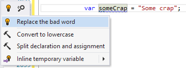

创建快速修复
您应该事先知道：
范例（ ？ ）：
上下文动作和快速修复之间的主要区别在于，快速修复仅在突出显示时出现。因此，快速修复用于修复特定代码分析器发现并突出显示的问题。

例如，让我们创建一个简单的快速修复程序，它可以对分析器从“即时分析代码”中提供的警告做出反应，并建议用“ BadWord”代替“废话”。
[QuickFix] public class CorrectBadWordQuickFix : QuickFixBase { private readonly IVariableDeclaration _variableDeclaration; public CorrectBadWordQuickFix([NotNull] BadWordNamingWarning warning) { _variableDeclaration = warning.VariableDeclaration; } protected override Action<ITextControl> ExecutePsiTransaction(ISolution solution, IProgressIndicator progress) { return textControl => { var newText = Regex.Replace(_variableDeclaration.DeclaredName, "crap", "BadWord", RegexOptions.IgnoreCase); RenameRefactoringService.Rename(solution, new RenameDataProvider((IDeclaredElement) _variableDeclaration, newText), textControl); }; } public override string Text => "Replace the bad word"; public override bool IsAvailable(IUserDataHolder cache) { return _variableDeclaration.IsValid(); } }笔记
- 创建快速修复的最简单方法是从
QuickFixBase类。 - 快速修复类必须标有
QuickFix属性。 - 的
BadWordNamingWarning传递给构造函数的警告突出显示对象用于获取应固定的特定代码元素（由特定突出显示突出显示的代码元素）。 - 的
Text属性定义将在操作列表中显示的文本。 IsAvailable用于检查快速插入操作是否可用于当前插入符号位置。ExecutePsiTransaction返回选择快速修复后执行的操作。- 请注意，我们使用
RenameRefactoringService更改变量的名称。该服务在代码中的所有位置执行变量的无缝重命名。
上次修改时间：2017年7月12日